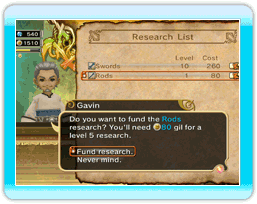

17 |
Onderzoek financieren |
 |
De winkels die bestemd zijn voor avonturiers (en die wapens, pantsers, en voorwerpen verkopen) doen onderzoek om nieuwe en betere uitrusting te maken. Je kunt gil gebruiken om hun onderzoek te financieren en zo de doeltreffendheid van je avonturiers te verbeteren.
Andere gebouwen zoals de tempels voor de witte magiërs, de academies voor de zwarte magiërs en de trainingscentra doen ook onderzoek naar nieuwe bekwaamheden en toverformules. De financiering zal het repertoire van de bekwaamheden van je avonturiers vergroten. Het onderzoek dat u kunt financieren wordt verdeeld in types, zoals "swords" (zwaarden), "daggers" (ponjaard), "restoration spells" (restauratie-toverformules)," of "fire spells" (vuur-toverformules). Het onderzoek dat je kunt verrichten hangt af van het gebouw en de ligging ervan in het koninkrijk. Zodra het onderzoek een bepaald niveau bereikt, hebben de onderzoeksgebouwen specifieke dingen nodig zoals "Restoration Magicite" (restauratiemagicite) om hun studies te bevorderen. Dit type onderzoeksmateriaal vind je slechts diep in de kerkers. Slechts avonturiers kunnen deze voorwerpen gaan halen. Hang dus opdrachten op om de kerkers die het vereiste onderzoeksmateriaal bevatten te exploreren. Zo kan je gebruik maken van wapens, pantsers en toverformules van zeer goede kwaliteit. |
 |
 |
 |